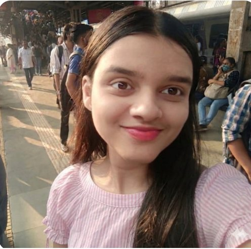

Hello! I'm Vaishnavi — a Computer Engineering student who loves design and code equally.
Currently in my third year of TE Computer Engineering, I'm diving deep into programming, web development, and UI/UX design. My journey began with a love of drawing that naturally grew into designing digital experiences.
I completed a Web Development Internship at Oasis Infobyte — building and deploying real-world web apps. I'm now channelling that foundation into learning more about AI, product design, and full-stack development.
A blend of design finesse and technical capability — from Figma pixels to Python scripts, I speak both languages.